Logical reasoning
Deductive reasoning can be reduced to the repeated application of the following syllogisms:
if $A$ is true, then $B$ is true
$A$ is true
$B$ is true
if $A$ is true, then $B$ is true
$B$ is false
$A$ is false
A hole in logic
Suppose some dark night a policeman walks down a street. He
hears a burglar alarm, looks across the street, and sees a jewelry store with
a broken window. Then a gentleman wearing a mask comes crawling out of the
window, carrying a bag full of jewelry. The policeman decides immediately that
the gentleman is a thief. How does he decide this?
Jaynes: Probability Theory
A hole in logic?
- $A$: "the gentleman is a thief"
- $B$: "the gentleman is wearing a mask and exited a broken window holding a bag of jewelry".
The policeman seems to be applying the following weak syllogism:
if $A$ is true, then $B$ is likely
$B$ is true
$A$ is likely
Why does his reasoning seem so sound?
Developing a theory of
plausible reasoning
Our theory must satisfy the following requirements:
- Degrees of plausibility are represented by
real numbers.
- Require qualitative correspondence with
common sense.
- Consistency:
- All valid reasoning routes give the same result.
- Equivalent states of knowledge must have equivalent degrees of plausibility.
Probability: extended logic
These requirements are enough to uniquely identify the
essential rules of probability theory!
- The probability $P(A|B)$ is the degree of
plausibility of proposition $A$ given that $B$ is
true.
- Product rule: $P(A|BC)P(B|C) = P(AB|C)$
- Sum rule: $P(A|B)+P(\bar{A}|B) = 1$
By convention, $P(A)=0$ indicates $A$ is certainly
false while $P(A)=1$ means $A$ is certainly true.
That's it! You can now do Bayesian statistics!
A word about notation
Strictly speaking, probabilities only ever concern propositions (i.e. things with true or false values):
A statement such as $P(N)$ is therefore as meaningless as $P(\text{Tim})$.
However, where propositions concern the value of a variable like $N$, we often use $P(n)$
as shorthand for $P(N=n)$.
Abusing notation, this is sometimes written as $P(N)$.
Frequentist definition of probability
Traditionally, probability has been defined in terms of
relative frequencies of outcomes of repeated random
(weakly controlled) "experiments".
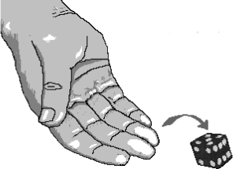
- $N$: Total number of rolls.
- $n_5$: Total number of 5s rolled.
- $P(d=5) \equiv n_5/N$ as $N\rightarrow\infty$
There are several problems here:
- Experiments are assumed to be repeatable.
- Assumes that randomness is a property of the system.
- Completely ignores $\sim 400$ years of physics.
Back to the Bayesian interpretation
The Bayesian interpretation treats probability as a
measure of the plausibility of propositions conditional on
available information.
A single proposition can therefore have multiple
probabilities depending on the available information!
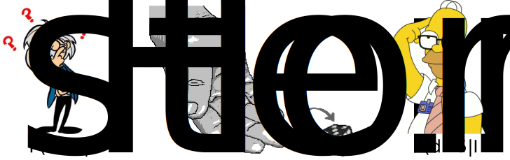
Continuous hypothesis spaces
Propositions regarding continuous variables require special treatment.
- Suppose $X$ may take any value between 0 and 10.
- The probability $P(X=x)$ will always be zero!
- Instead, define $P(x<X<x+\delta) = \delta f(x)$
- $f(x)$ is a probability density.
- It is normalized: $\int_0^{10}f(x)dx=1$
- It is positive: $f(x)\geq 0$
- At a given point $f(x)$ may be $>1$!
Often, $f(x)$ follows the standard rules of probability.
What is inference?
Inference is the act of deriving logical conclusions from premises assumed to be true.
Statistical inference generalises this to situations where
the premises are not sufficient to draw conclusions
without uncertainty.
What is "data"?
Urn example
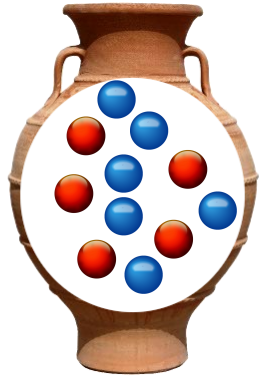
- An urn contains 11 balls: $N_r$ red and $11-N_r$ blue.
- Suppose we remove a ball (no peeking), record its colour, then replace it.
- Suppose we repeat this 2 more times, obtaining the sequence R,B,R.
How many of the balls in the urn are red? In other words,
what is $P(N_r|d_1=R,d_2=B,d_3=R)$?
Urn example (continued)
Given the description of the process, it is more tractable to consider
$$P(d_1,d_2,d_3|N_r)=P(d_3|N_r,d_1,d_2)P(d_2|N_r,d_1)P(d_1|N_r)$$
Knowing nothing about the internal arrangement of the balls in the urn, we must have $P(d_1|N_r)=N_r/11$.
In general $P(d_2|N_r,d_1)$ depends on the result of the first draw!
Cheat by assuming urn is shaken between draws
and we know nothing of physics, so that
$P(d_2|N_r,d_1)=P(d_2|N_r)$.
Urn example (continued)
Now we can claim
\begin{align}
P(d_1=R,d_2=B,d_3=R|N_r)&=\frac{N_r}{11}\times\frac{(11-N_r)}{11}\times\frac{N_r}{11}\\
&=N_r^2(11-N_r)/11^3
\end{align}
Applying the product rule a couple of times yields:
\begin{align}
P(N_r|R,B,R)P(R,B,R)&=P(R,B,R|N_r)P(N_r)\\
P(N_r|R,B,R)& = \frac{1}{P(R,B,R)}P(R,B,R|N_r)P(N_r)
\end{align}
The term $P(R,B,R)$ is a function only of the data:
constant. The term $P(N_r)$ specifies the plausibility of
each possible value of $N_r$ in the absence of the
data.
Urn example (continued)
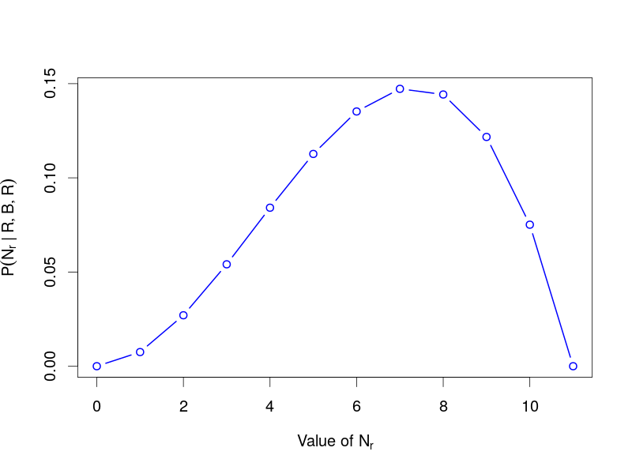
Bayes theorem
In answering this question we have accidentally used Bayes theorem:
$$\color{cyan}{P(\theta_M|D,M)} = \frac{\color{orange}{P(D|\theta_M,M)}\color{red}{P(\theta|M)}}{\color{green}{P(D|M)}}$$
Here $\theta_M$ are parameters of some model $M$ and $D$ is data assumed to be generated by that model.
The components of the equation even have names:
- The posterior of $\theta$: $P(\theta|D)$,
- the likelihood of $\theta$: $P(D|\theta)$, and
- the prior of $\theta$: $P(\theta)$
What is a prior probability?
A prior probability is:
A probability!
The probability of whatever you're interested in but
in the absence of possibly relevant data.
In principle, any two (rational) people with access to the same information should
specify exactly the same prior.
In practice this often isn't true.
Prior probabilities are necessary
Isn't the need for priors a problem with the Bayesian approach?
- It is not possible to do inference without making assumptions.
- Priors allow previous knowledge to be incorporated.
- Frequentist (and Likelihoodist) methods also use priors: it's just not clear what they are!
Priors for discrete variables
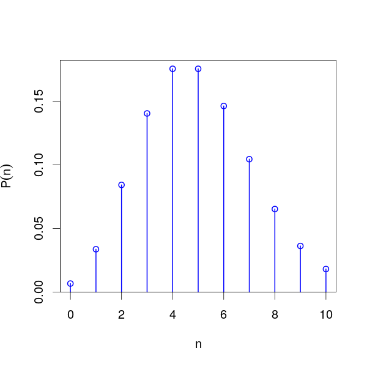
- Defining priors for discrete variables with finite bounds
is often straight-forward.
- Principle of indifference.
- E.g. for discrete variables representing the number
of events that occur in a given interval, a Poissonian distribution may be
appropriate.
Priors for continuous variables
For a continuous variable $a<x<b$, sensible priors may include
- The uniform distribution $f(x)=1/(b-a)$,
- A Beta distribution, $f(x)\propto(x-a)^{\alpha-1}(b-x)^{\beta-1}$
For a rate variable $\lambda>0$,
- May fix $f(\lambda)=c$ to indicate complete ignorance
- But this is probably not what you want!
- Places almost all probability on large values.
- $f(\lambda)=1/\lambda$ is a better choice (uniform in log-space)
Improper priors
Hold on, how can we choose a
value of $c$ in $f(\lambda)=c$ so that $f(\lambda)$ is
normalized on the domain of $\lambda$?
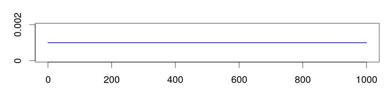
We can't! This $f(\lambda)$
is not a true probability density.
It turns out that this is usually okay, provided the
likelihood causes the posterior to be normalizable.
Improper priors (continued)
However, for weak data sets improper priors can cause problems.
It is important to remember that
- One almost never knows absolutely nothing.
- Upper and lower bounds can almost always be placed.
- The log-normal prior can be considered a normalizable replacement for
the $1/x$ prior.
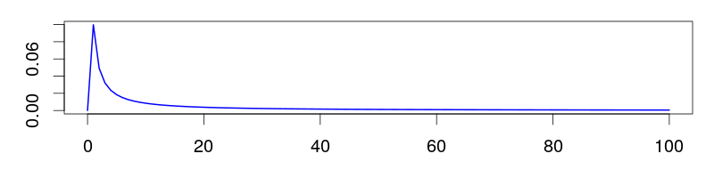
Which prior is best?
Only the person doing the analysis can answer this!
Priors encapsulate expert knowledge (or its absence).
This is your opportunity to contribute your hard-won
expertise to the analysis.
What's so difficult about this?
INTEGRATION
Bayes' theorem has a troublesome denominator:
$$
P(\theta_M|D,M)=\frac{P(D|\theta_M,M)P(\theta_M|M)}{P(D|M)}
$$
The quantity $P(D|M)$ is a normalizing constant, which is the
result of integrating the numerator over all $\theta_M$:
$$P(D|M)=\int P(D|\theta_M,M)P(\theta_M|M)d\theta_M$$
- Unless you're very lucky, you can't do this
integral with pen and paper.
- If $\theta_M$ has many dimensions, you can't even do
this using a computer.
Monte Carlo methods
In our context, Monte Carlo
methods are algorithms which produce random samples of
values in order to characterize a probability
distribution over those values.
Usually, the algorithms we
deal with seek to produce an arbitrary number of
independent samples of $\theta_M$ drawn from the
posterior distribution $P(\theta_M|D,M)$.
Rejection sampling
One of the simplest Monte Carlo methods for drawing from
arbitrary distributions is the rejection sampler:
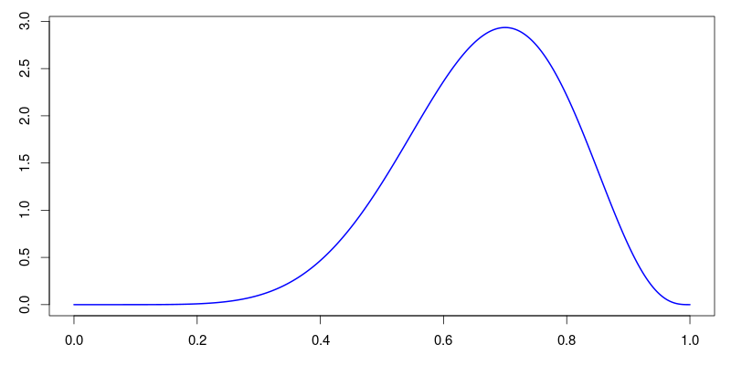
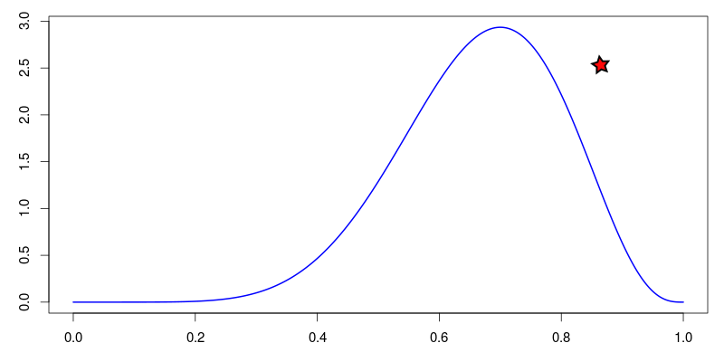
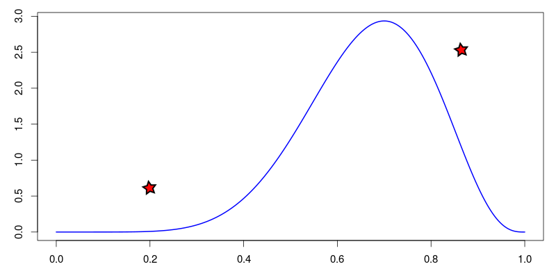
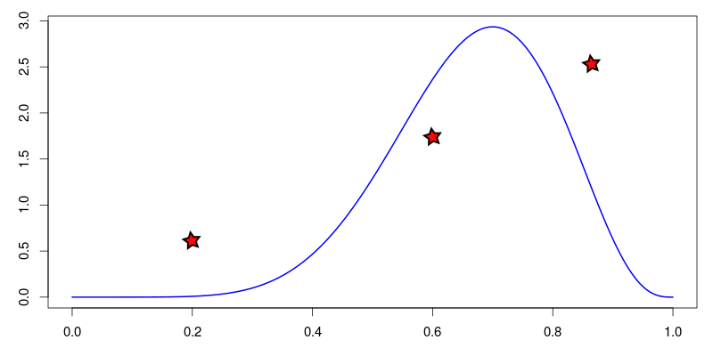
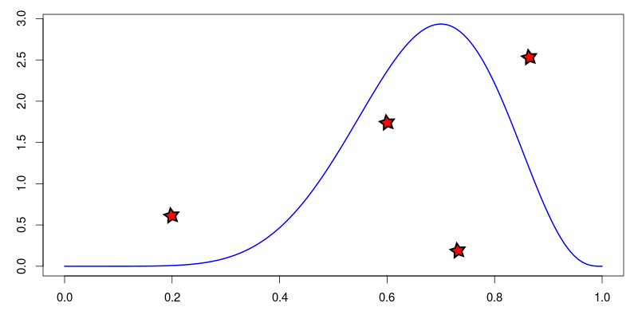
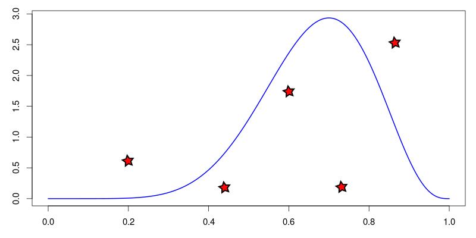
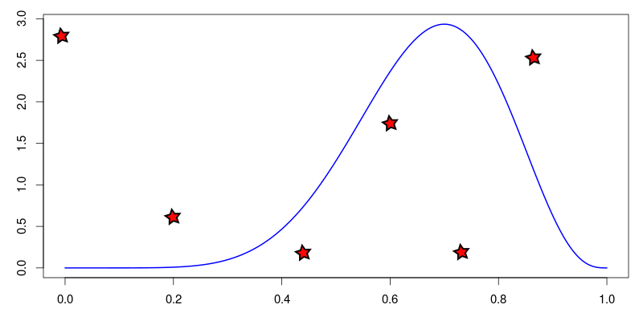
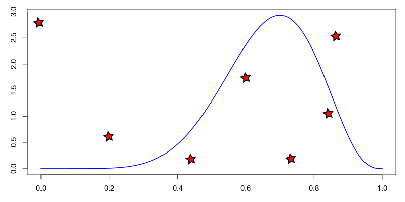
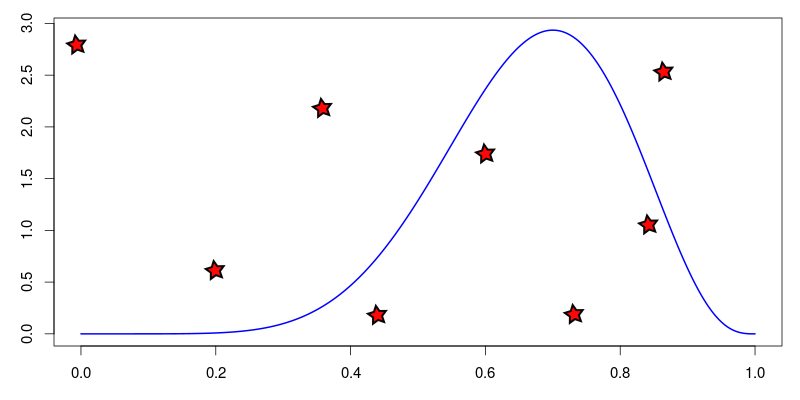
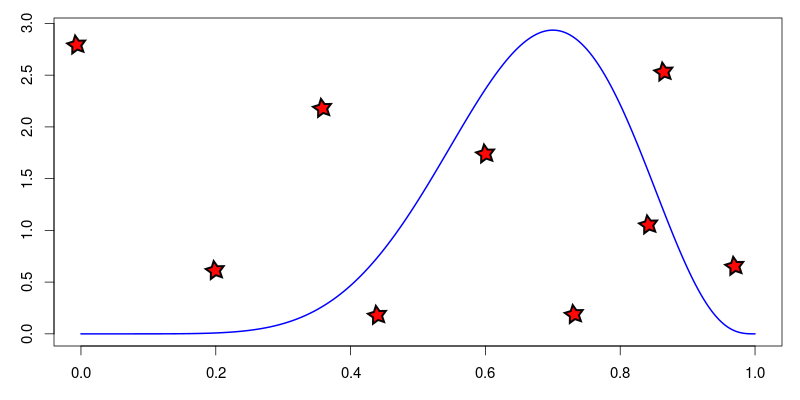
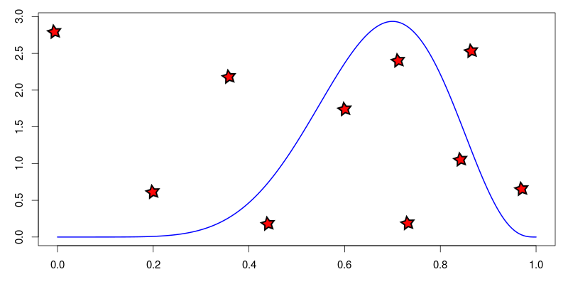
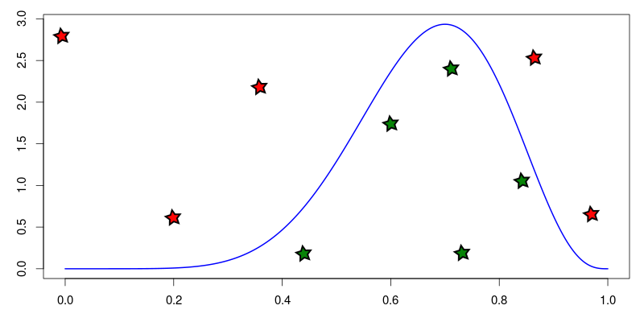
Reject red
samples, green samples are
drawn from target distribution.
The curse of dimensionality
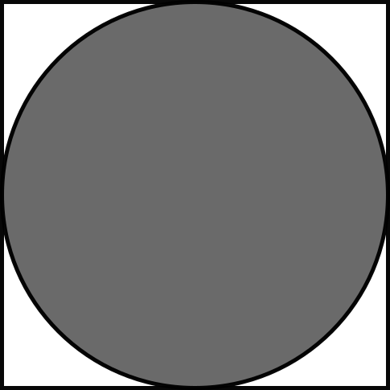
In general, the fraction of an enclosing distribution
occupied by a target distribution diminishes rapidly
as the number of dimensions increases.
This means that for problems with large numbers of unknown parameters,
rejection sampling will only ever produce rejects!
The Metropolis-Hastings algorithm
This algorithm produces samples from a distribution $f(x)$ by generating a
random walk over possible values of $x$.
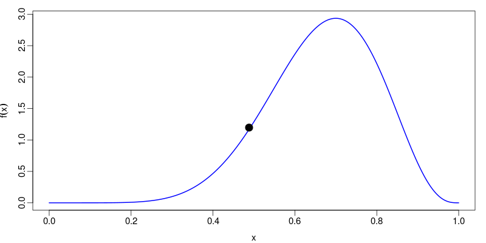
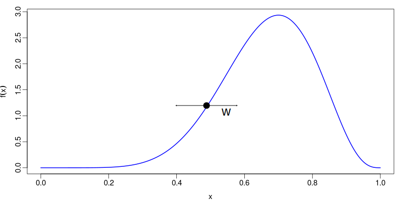
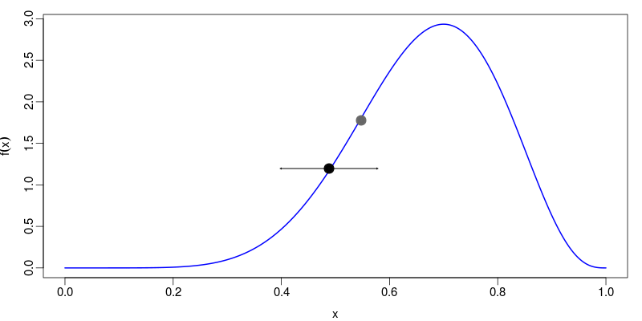
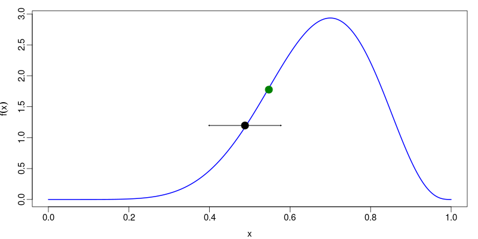
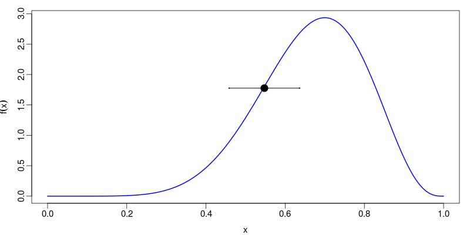
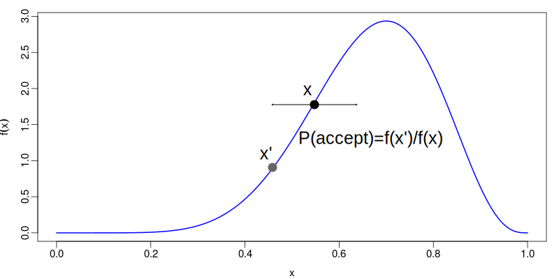
- walk explores mostly high probability areas
- algorithm does not require normalized $f(x)$
Result of MCMC algorithm
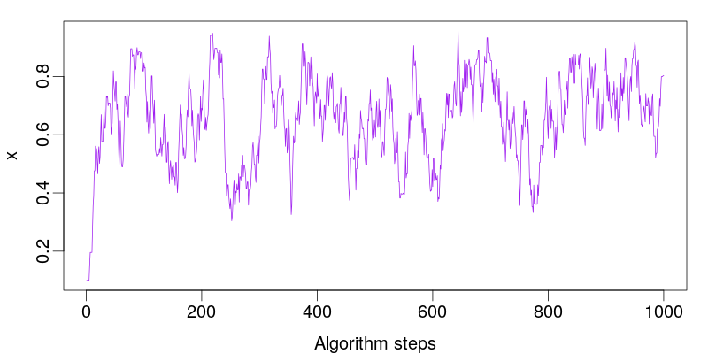
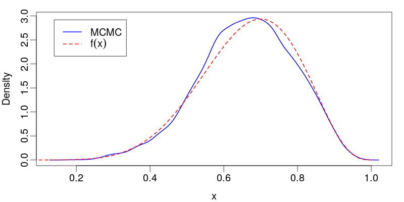
Convergence and Mixing
- Adjacent MCMC samples for $x$ are correlated.
- In the limit of an infinite number of steps between a pair
of samples, they will be independent draws.
- The first state of the MCMC chain is chosen
arbitrarily - it is not a draw from the
posterior.
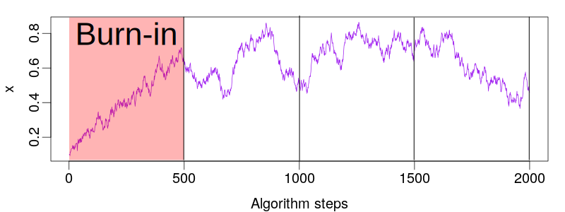
What determines convergence and mixing rates?
- Convergence is affected by the starting state.
- Convergence and mixing are affected by
- Proposals: how big are the steps in the random
walk? What direction are they in?
- The target density: multiple modes cause havoc!
Assessing Convergence
The tried and true method for assessing convergence is to
compare the results of distinct chains generated from
independently selected initial conditions.

- Once satisfied, chains can be combined.
- Can run at the same time on a cluster.
- Doesn't necessarily prove convergence!
Assessing Mixing
The key to assessing mixing is the autocorrelation function of the chain states:

The number of steps required for this function to decay to
within the vicinity of 0 is the gap between effectively independent samples,
$\tau$.
Assessing Mixing (continued)
If $N$ is the total number of MCMC samples, we then define
$$N_{\text{eff}}=\frac{N}{\tau}$$
to be the effective sample size (ESS).
The ESS is a rough estimate of the number of actual
samples a chain has generated.
You should really only
consider the order of magnitude of the ESS.